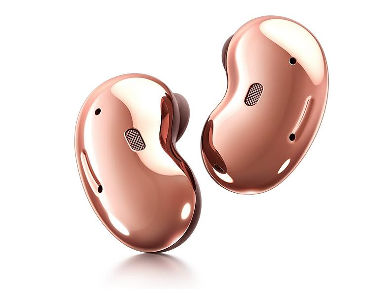
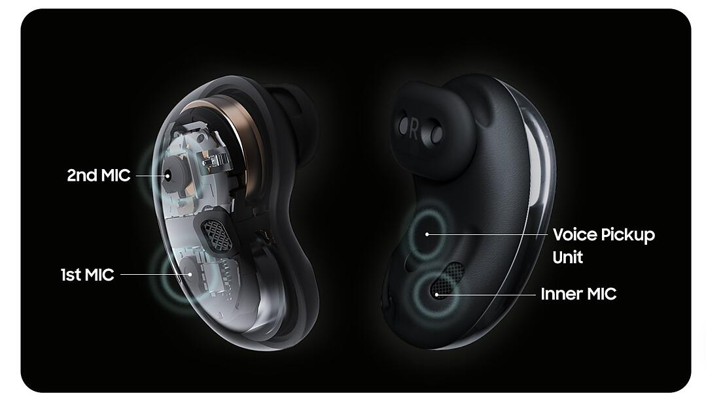

Conheça o Kidney Beans
O Kidney Beans é um fone de ouvido bluetooth com funcionalidades que vão além de ouvir música, ele também oferece tradução simultânea, o que significa que você pode falar e ouvir a tradução de outras pessoas ao mesmo tempo.

Diferente daqueles tradutores em que é necessário passar o aparelho para frente e para trás, apertar botões, esperar que uma pessoa termine de falar e a tradução ser entregue para que a outra pessoa possa falar, o Kidney Beans, através da utilização de IA Neural Machine Translation (tradução automática neural), oferece mais liberdade e uma maior facilidade de comunicação.
Reproduz sons nítidos
Os aparelhos possuem microfones triplos que conseguem reconhecer a voz e eliminar ruídos para permitir uma captação correta, além de uma tradução precisa. Com isso, será possível compreender o que a outra pessoa está falando sem perder nenhuma palavra ou ser interrompido por sons externos.

Funciona com Android e iOS
Basta parear os fones de ouvido com o celular, abrir o aplicativo Kidney Beans e selecionar o idioma para qual deseja traduzir.
Feito para seus ouvidos
O design do Kidney Beans é suave para seu ouvido, proporcionando conforto durante todo o dia sem cansaço. Ele é ergonomicamente confortável e não invasivo, e oferece dois tamanhos de ponteira para um encaixe perfeito. Assim, vá ao trabalho, à viagens, à casa dos seus amigos e a outros lugares sem tirar os fones dos ouvidos.
Valorize seu estilo com acabamentos brilhantes
Disponível em cinco cores que você vai amar. Escolha entre as cores bronze, branco, preto, azul ou vermelho para adicionar um toque brilhante ao seu visual.